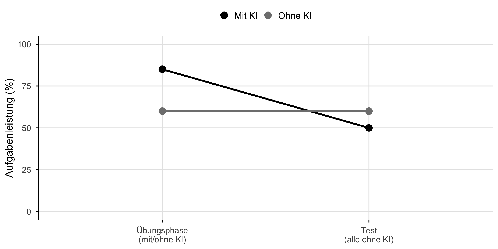

![]()

KI in der Hochschulbildung
Werkzeuge für Experten, Herausforderungen für Lernende
Ein überraschendes Ergebnis
Mit KI-Zugang:
48% mehr Aufgaben
korrekt gelöst
Ohne KI (später):
17% schlechter
als die Kontrollgruppe
Quelle
Bastani et al. (2025): ~1000 Gymnasiasten, GPT-4 Zugang während Mathe-Übungen1
Das Paradox
Abbildung 1
Aufgabenleistung ≠ Lernen
Das Nadelöhr des Lernens
Arbeitsgedächtnis
- 4 ± 1 Elemente
- ~30 Sekunden
- Der Engpass allen Lernens
Langzeitgedächtnis
- Unbegrenzte Kapazität
- Dauerhafte Speicherung
- Hier lebt Expertise
Kernaussage
Alles Lernen muss durch das Nadelöhr des Arbeitsgedächtnisses.1
Erwünschte Schwierigkeiten
“Conditions that slow the rate of apparent learning often optimize long-term retention and transfer.”
Robert Bjork1
Selbst generieren
Verteilt lernen
Aktiv abrufen
Variieren
Schwerer fühlt sich schlechter an, ist aber besser für langfristiges Lernen.
Der Generierungseffekt
Selbst generierte Information wird besser behalten.1
Wenn KI generiert, was Studierende selbst produzieren sollten, entfällt der Lerneffekt.
Historische Analogien
| Technologie | Effekt |
|---|---|
| GPS | Räumliches Gedächtnis ↓1 |
| Taschenrechner | Konzeptuelles Verständnis ↓ |
| “Wo” ersetzt “Was”2 | |
| KI | Alles oben + mehr? |
Das Muster wiederholt sich. Aber: KI ist breiter als GPS oder Taschenrechner.
Die Nuance
“Students attempt to use GPT-4 as a ‘crutch’ during practice sessions, and when successful, perform worse on their own.”
Bastani et al. (2025)
Aber:
- Direkter GPT-4 Zugang: 48% mehr Aufgaben
- GPT Tutor (strukturiert): 127% mehr Aufgaben
Kernpunkt
Die Art der Nutzung macht den Unterschied. KI als Antwortgeber ≠ KI als pädagogisch gestalteter Tutor.
Was Experten sehen

Novize:
“64 Felder, 32 Figuren”
. . .
Experte:
“Königsangriff, offene Linie, Schwäche auf f7”
. . .
Experten haben eine andere kognitive Architektur.1
Der Expertise-Umkehr-Effekt

Der Expertise-Umkehr-Effekt1
Warum Experten profitieren, Lernende nicht
Experten:
- Können Routine auslagern
- Können KI-Output bewerten
- Behalten höheres Denken
Lernende:
- Können nicht bewerten
- Überspringen Grundlagen
- Risiko: “Fliessende Inkompetenz”
Dasselbe Werkzeug, fundamental unterschiedliche Auswirkungen.
Kritisches Denken braucht Fachwissen
“Critical thinking is not a skill. There is not a set of critical thinking skills that can be acquired and deployed regardless of context.”
Daniel Willingham1
Biomedizin-Experte:
Erkennt, wenn ChatGPT bei Biochemie falsch liegt
Novize:
Kann diese Bewertung nicht vornehmen
Du kannst nicht kritisch bewerten, was du nicht verstehst.
Kognition erweitern vs. ersetzen
Kognition erweitern:
- Mensch bleibt kognitiv engagiert
- Werkzeug verstärkt, ersetzt nicht
- Fähigkeiten bleiben erhalten
Kognition ersetzen:
- Mensch wird passiv
- Werkzeug übernimmt das Denken
- Abhängigkeit entsteht
Dasselbe Werkzeug kann beides sein, abhängig von der Nutzung.1
Die Sequenzierungsfrage
- Studierende brauchen wahrscheinlich Grundwissen, bevor KI vorteilhaft wird
- Der Expertise-Umkehr-Effekt empfiehlt dynamische KI-Nutzungsregeln
- Die Schwelle ist unbekannt und vermutlich domänenspezifisch
- Es gibt keine Pauschallösung
Grundlagen BEVOR Werkzeuge
Die Kernaussage
KI-Werkzeuge sind für Experten gemacht.
Sie machen Experten produktiver.
Lernende profitieren oft nicht, weil Lernen die kognitive Anstrengung erfordert, die KI zu eliminieren droht.
Lernende brauchen erst das Fundament, das kritische KI-Nutzung ermöglicht.
Referenzen
Bastani, Hamsa, Osbert Bastani, Alp Sungu, Haosen Ge, Özge Kabakcı, und Rei Mariman. 2025. „Generative AI Without Guardrails Can Harm Learning: Evidence from High School Mathematics“. Proceedings of the National Academy of Sciences of the United States of America 122 (26): e2422633122. https://doi.org/10.1073/pnas.2422633122.
Bjork, Elizabeth Ligon, und Robert A. Bjork. 2011. „Making Things Hard on Yourself, but in a Good Way: Creating Desirable Difficulties to Enhance Learning“. In Psychology and the Real World: Essays Illustrating Fundamental Contributions to Society, 56–64. New York, NY, US: Worth Publishers.
Chase, William G., und Herbert A. Simon. 1973. „Perception in Chess“. Cognitive Psychology 4 (1): 55–81. https://doi.org/10.1016/0010-0285(73)90004-2.
Clark, Andy. 2025. „Extending Minds with Generative AI“. Nature Communications 16 (1): 4627. https://doi.org/10.1038/s41467-025-59906-9.
Dahmani, Louisa, und Véronique D. Bohbot. 2020. „Habitual Use of GPS Negatively Impacts Spatial Memory During Self-Guided Navigation“. Scientific Reports 10 (1): 6310. https://doi.org/10.1038/s41598-020-62877-0.
Groot, Adriaan D. De, und Adrianus Dingeman de Groot. 1978. Thought and Choice in Chess. Walter de Gruyter. https://books.google.com?id=EI4gr42NwDQC.
Kalyuga, Slava. 2009. „The Expertise Reversal Effect“. In Managing Cognitive Load in Adaptive Multimedia Learning, 58–80. IGI Global Scientific Publishing. https://doi.org/10.4018/978-1-60566-048-6.ch003.
Slamecka, Norman J., und Peter Graf. 1978. „The Generation Effect: Delineation of a Phenomenon“. Journal of Experimental Psychology: Human Learning and Memory 4 (6): 592–604. https://doi.org/10.1037/0278-7393.4.6.592.
Sparrow, Betsy, Jenny Liu, und Daniel M. Wegner. 2011. „Google Effects on Memory: Cognitive Consequences of Having Information at Our Fingertips“. Science (New York, N.Y.) 333 (6043): 776–78. https://doi.org/10.1126/science.1207745.
Sweller, John. 2024. „Cognitive Load Theory and Individual Differences“. Learning and Individual Differences 110 (Februar): 102423. https://doi.org/10.1016/j.lindif.2024.102423.
Willingham, Daniel T. 2008. „Critical Thinking: Why Is It So Hard to Teach?“ Arts Education Policy Review 109 (4): 21–32. https://doi.org/10.3200/AEPR.109.4.21-32.
KI in der Lehre: Refresher